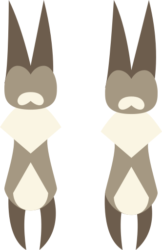
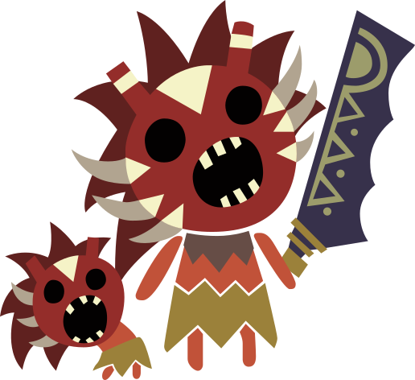

Good Luck. Remember to visit the Canteen!

FAQ
Hi there hunter! This FAQ should give you a quick understanding of Indecisive Hunter.
Q: How do I use it?
A: Click the "Quell your indecision" button to have the choice made for you.
Q: Why though?
A: I'm pretty far into MHW myself and a lot of times I get on unsure of what to go hunt; so I made this site to make a decision for me!
Q: It's pretty basic.
A: Currently, yes it is. However I do plan on expanding the functionality to allow specific areas and the monsters therein to be filtered. Eventually you'll be able to even have your weapons and armor selected to give you a full loadout.